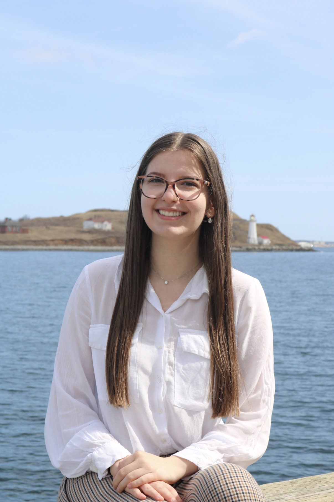

Meet Teodora
I am an electrical engineer driven by curiosity, precision, and a deep belief that the best technical work is also the most intentional. My path has taken me through power systems, circuit environments, and design challenges that have sharpened the way I think, communicate, and build.
Engineering is not just what I do. It is how I see the world. I look at a system and immediately start thinking about how it works, what it connects to, and how it could be better. That instinct shows up in my work and in the way I approach every project from first principles.
I am based in Boston, MA, and currently focused on growing into electrical design engineering, where technical depth meets the craft of making something truly well made. I am selective, thorough, and always pushing toward the next level of my work.

Life Outside the Lab
Live Music and Concerts
There is nothing that recharges me the way live music does. The energy of a great show, the crowd, the sound hitting you at full force. It is one of my favorite ways to be fully present.
Food and Travel
I explore new cities through food. Give me a local restaurant, an unfamiliar neighborhood, and an open afternoon and I am exactly where I want to be.
Fitness and the Gym
Consistent training taught me more about discipline than almost anything else. The gym is where I show up for myself, build focus, and stay grounded.
I came into engineering because I wanted to build things that work. Now I am channeling that foundation into electrical design, where technical precision meets real world impact. I am not here to do work that is good enough. I am here to do work that is right.